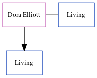

Dora Cowell (née Elliott)
[ Home ] | [ Calendar ] | [ Surnames Index ] | [ Census Index ] | [ Family History ]Dora Elliott, the wife of Desmond James Cowell (the second cousin on the mother's side of Nigel Horne), and married Desmond (with whom she had 1 surviving child, Richard J) in Totnes, Devon, England around Aug 19521.
Citations
- England & Wales, Marriage Index: 1916-2005 Online publication - Provo, UT, USA: The Generations Network, Inc., 2009.Original data - General Register Office. England and Wales Civil Registration Indexes. London, England: General Register Office. © Crown copyright. Published by permission of the Cont
Media
England & Wales marriages 1837-2008 - BMD/M/1952/3/AO/000464/104
Family Tree
Generated by ged2site. Last updated on Jun 11, 2024